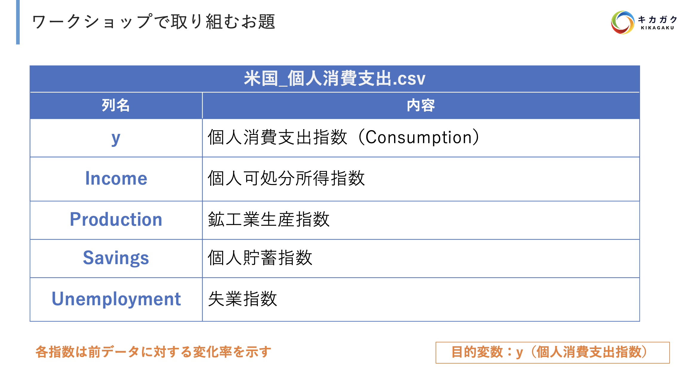

16. 自己回帰型モデル
本章で使用するデータ
16.1. statsmodels の更新
[1]:
# # statsmodels の更新（コメントアウトを外して実行してください）
# !pip uninstall -q statsmodels
# !pip install -q statsmodels==0.13.1
Proceed (y/n)? が表示されましたら y と入力して Enter キーを押してください。
16.2. データの読み込み
[2]:
# 必要なモジュール・パッケージのインポート
import numpy as np
import pandas as pd
import matplotlib.pyplot as plt
import seaborn as sns
import statsmodels
import statsmodels.api as sm
# 警告非表示
import warnings
warnings.filterwarnings('ignore')
# グラフサイズの設定
plt.rcParams['figure.figsize'] = 10, 6
時系列モデルの実装には statsmodels を使用します。statsmodels はバージョンにより実装内容が大きく変わる（使用できる関数が違う等）ため、以下のバージョンと同じかどうか確認をしておきましょう。
詳しい実装内容に関しては公式ドキュメントを参照してください。
[3]:
# バージョンの確認
statsmodels.__version__
[3]:
'0.13.2'
[4]:
# AirPassengers.csv
df = pd.read_csv('data/AirPassengers.csv',
index_col='Month',
parse_dates=True)
df.head(3)
[4]:
| #Passengers | |
|---|---|
| Month | |
| 1949-01-01 | 112 |
| 1949-02-01 | 118 |
| 1949-03-01 | 132 |
16.3. 時系列モデルの概要
時系列モデルの概要についてお伝えします。まずは以下の表をご覧ください。
分類 |
具体的な手法 |
対応しているデータ |
|---|---|---|
自己回帰型モデル |
AR モデル |
定常過程 |
MA モデル |
定常過程 |
|
ARMA モデル |
定常過程 |
|
ARIMA モデル |
非定常過程 |
|
SARIMA モデル |
非定常過程 |
|
SARIMAX モデル |
非定常過程 |
|
状態空間モデル |
線形ガウス状態空間モデル |
非定常過程 |
隠れマルコフモデル |
非定常過程 |
|
深層学習ベース |
LSTM を用いた時系列モデル |
非定常過程 |
Attention を用いた時系列モデル |
非定常過程 |
時系列解析を行うためのモデルは様々な種類が存在します。大きく統計モデル（自己回帰型モデル、状態空間モデル）と深層学習ベースのモデルに分類できます。
本研修では統計モデルである自己回帰型モデルについて扱います。まずは概要を掴んでおきましょう。
自己回帰型モデル
自己回帰型モデルとは過去の自分自身の値やノイズが現在の値に影響を与えているという考え方から定義されるモデルです。
\[現在の売上高= 100000 + 0.8\times 1 日前の売上高 + 1.2\times 1 日前のノイズ\]
過去のどの値を考慮するのかやどんなデータに対して適用するかにより様々なモデルがありますが、構造自体は過去のデータから現在を予測するというシンプルな内容です。
この後は自己回帰型モデルの各手法について詳細に見ていきます。
16.4. AR モデル : 自己回帰モデル : autoregressive model
過去の自分のデータを使って短期の自己相関を表現するモデル です。
1 次の AR モデル (AR(1))
\(\rm y_{t}\)：時点 \(\rm t\) の時系列
\(\rm C\)：定数項
\(\rm \phi_{1}\)：パラメータ
\(\rm \epsilon_{t}\)：時点 \(\rm t\) でのホワイトノイズ \(\rm:(\epsilon_{t}\sim N(0, \sigma^2))\)
例：今月の飛行機の乗客数を予測する AR モデル
0.8 : 推定されたパラメータ（最尤法）
\(\rm y_{t-1}\)：先月の乗客数
\(\rm \epsilon_{t}\)：今月のホワイトノイズ
次数を増やすことも可能です。
3 次の AR モデル (AR(3))
\(\rm y_{t-1}\)：先月の乗客数
\(\rm y_{t-2}\)：2 ヶ月前の乗客数
\(\rm y_{t-3}\)：3 ヶ月前の乗客数
\(\rm \epsilon_{t}\)：今月のホワイトノイズ
サンプルデータを作成し、AR モデルを適用させてみましょう。
[5]:
# AR モデル用のサンプルデータ
np.random.seed(42) # シードの固定
y = np.zeros(1000)
epsilon = np.random.randn(1000) # 標準正規分布
# サンプルデータの作成
for t in range(1, 1000):
y[t] = 1 + 0.5 * y[t - 1] + epsilon[t]
# Series 型に変換
y = pd.Series(y)
# 可視化
plt.plot(y);
それでは AR モデルの実装を行います。実装は statsmodels.tsa.arima.model.ARIMA() クラスで実装できます。正確にはこちらは後述する SARIMAX モデルの実装なのですが引数で AR モデルとしても使用できるためこちらで実装を行います。
order の引数で AR モデルの次数（何日前までのデータを考慮したモデルにするか）を決定します。詳細は以下です。
order=(p, d, q)
p : AR モデルの次数
d : ARIMA モデルにおいて差分を取る階数（後述）
q : MA モデルの次数（後述）
[6]:
# AR モデルでフィッティング
from statsmodels.tsa import arima
ar_model = arima.model.ARIMA(y, order=(1, 0, 0)).fit()
print(ar_model.summary())
SARIMAX Results
==============================================================================
Dep. Variable: y No. Observations: 1000
Model: ARIMA(1, 0, 0) Log Likelihood -1399.053
Date: Fri, 30 Sep 2022 AIC 2804.106
Time: 00:37:29 BIC 2818.829
Sample: 0 HQIC 2809.702
- 1000
Covariance Type: opg
==============================================================================
coef std err z P>|z| [0.025 0.975]
------------------------------------------------------------------------------
const 2.0316 0.061 33.167 0.000 1.912 2.152
ar.L1 0.4938 0.028 17.434 0.000 0.438 0.549
sigma2 0.9607 0.042 22.616 0.000 0.877 1.044
===================================================================================
Ljung-Box (L1) (Q): 0.00 Jarque-Bera (JB): 2.46
Prob(Q): 0.98 Prob(JB): 0.29
Heteroskedasticity (H): 1.01 Skew: 0.12
Prob(H) (two-sided): 0.93 Kurtosis: 3.06
===================================================================================
Warnings:
[1] Covariance matrix calculated using the outer product of gradients (complex-step).
上記がデータを学習させた結果になります。様々な情報が出ていますが、まずは以下を確認しましょう。
const : 定数項 (\(C\))
ar.L1 : 時点 \(t-1\) における時系列の係数であるパラメータ (\(\phi_{1}\))
sigma2 : 残差であるホワイトノイズ項の分散 (\(\sigma^2\))
残差の定義は以下です。
残差 = 実測値 - 推定したモデルの予測値
また
coef : 推定量
std err : 標準誤差（推定量の標準偏差）
となります。
それでは適切なモデリングができたか確認します。モデルの妥当性が認められる場合には、残差はホワイトノイズとなるため、以下が満たされます。
残差項の分布が正規分布になっているか
自己相関がすべて 0 に近いか（95% 信頼区間にすべて含まれるか）
本章では自己相関のみ確認してみます。
[7]:
# 残差チェック
sm.graphics.tsa.plot_acf(ar_model.resid, lags=30)
plt.show()
ラグ 0 以外のすべての自己相関係数が 95%信頼区間に含まれているため、適切なモデリングができていそうです。
最後にモデルに予測をさせ、原系列と予測結果の比較を行いましょう。
[8]:
# 予測
pred = ar_model.predict(start=800, end=1000)
# 原系列
plt.plot(y)
# 予測
plt.plot(pred, color='red');
傾向はあっていますが、値の散らばり具合が少し異なることが確認できました。
16.5. MA モデル : 移動平均モデル : moving average model
過去のホワイトノイズを用いて短期の自己相関を表現する モデルです。
1 次の MA モデル (MA(1))
\(\rm \mu\)：定数項
\(\rm \theta_{1}\)：パラメータ
\(\rm \epsilon_{t}\)：時点 \(\rm t\) での正規ホワイトノイズ \(\rm:(\epsilon_{t}\sim N(0, \sigma^2))\)
AR モデルと同様に実装してみましょう。
[9]:
#プロットするデータ列の作成
y = np.zeros(1000)
np.random.seed(42)
epsilon = np.random.randn(1000) # 標準正規分布
for t in range(1, 1000):
y[t] = 1 + 0.5 * epsilon[t - 1] + epsilon[t]
y = pd.Series(y)
plt.plot(y);
MA モデルを実装する際は order=(p, d, q) の q にて MA モデルの次数を決定します。
[10]:
# MA モデルでフィッティング
ma_model = arima.model.ARIMA(y, order=(0, 0, 1)).fit()
print(ma_model.summary())
SARIMAX Results
==============================================================================
Dep. Variable: y No. Observations: 1000
Model: ARIMA(0, 0, 1) Log Likelihood -1398.099
Date: Fri, 30 Sep 2022 AIC 2802.198
Time: 00:37:29 BIC 2816.921
Sample: 0 HQIC 2807.794
- 1000
Covariance Type: opg
==============================================================================
coef std err z P>|z| [0.025 0.975]
------------------------------------------------------------------------------
const 1.0269 0.047 21.987 0.000 0.935 1.118
ma.L1 0.5034 0.028 18.279 0.000 0.449 0.557
sigma2 0.9589 0.042 22.586 0.000 0.876 1.042
===================================================================================
Ljung-Box (L1) (Q): 0.13 Jarque-Bera (JB): 2.57
Prob(Q): 0.72 Prob(JB): 0.28
Heteroskedasticity (H): 1.01 Skew: 0.12
Prob(H) (two-sided): 0.90 Kurtosis: 3.06
===================================================================================
Warnings:
[1] Covariance matrix calculated using the outer product of gradients (complex-step).
上記の結果となりました。作成したサンプルの値をうまく推定できています。
それでは残差の確認も行いましょう。
[11]:
# 残差チェック
sm.graphics.tsa.plot_acf(ma_model.resid, lags=30)
plt.show()
少々 95% 信頼区間を外れているものもありますが、ほとんどのラグは区間内に含まれています。
最後に予測結果の確認も行いましょう。
[12]:
# 予測
pred = ma_model.predict(start=800, end=1000)
# 原系列
plt.plot(y)
# 予測
plt.plot(pred, color='red');
こちらも AR モデルと同様にデータの散らばり具合のみうまく予測できていないようです。
16.6. ARMA モデル : 自己回帰移動平均モデル : autoregressive moving average model
名前の通り AR + MA のモデルです。
1 次の ARMA モデル (ARMA(1, 1))
\(\rm y_{t}\)：今月の乗客数
0.8：推定された AR のパラメータ
\(\rm y_{t-1}\)：先月の乗客数
0.6：推定された MA のパラメータ
\(\rm \epsilon_{t-1}\)：先月のホワイトノイズ
\(\rm \epsilon_{t}\)：今月の正規ホワイトノイズ \(\rm:(\epsilon_{t}\sim N(0, \sigma^2))\)
[13]:
#プロットするデータ列の作成
y = np.zeros(1000)
np.random.seed(42)
epsilon = np.random.randn(1000) # 標準正規分布
for t in range(1,1000):
y[t] = 1 + 0.5 * y[t-1] + 0.5 * epsilon[t-1] + epsilon[t]
y = pd.Series(y)
plt.plot(y);
order=(p, d, q) では、AR モデルと MA モデルの次数である p と q を指定します。
[14]:
# ARMA モデルでフィッティング
arma_model = arima.model.ARIMA(y, order=(1, 0, 1)).fit()
print(arma_model.summary())
SARIMAX Results
==============================================================================
Dep. Variable: y No. Observations: 1000
Model: ARIMA(1, 0, 1) Log Likelihood -1398.875
Date: Fri, 30 Sep 2022 AIC 2805.751
Time: 00:37:30 BIC 2825.382
Sample: 0 HQIC 2813.212
- 1000
Covariance Type: opg
==============================================================================
coef std err z P>|z| [0.025 0.975]
------------------------------------------------------------------------------
const 2.0498 0.091 22.470 0.000 1.871 2.229
ar.L1 0.4851 0.036 13.325 0.000 0.414 0.556
ma.L1 0.5136 0.035 14.679 0.000 0.445 0.582
sigma2 0.9597 0.043 22.522 0.000 0.876 1.043
===================================================================================
Ljung-Box (L1) (Q): 0.05 Jarque-Bera (JB): 2.63
Prob(Q): 0.83 Prob(JB): 0.27
Heteroskedasticity (H): 1.01 Skew: 0.12
Prob(H) (two-sided): 0.90 Kurtosis: 3.07
===================================================================================
Warnings:
[1] Covariance matrix calculated using the outer product of gradients (complex-step).
適切にモデリングができているか、残差のチェックも行いましょう。
[15]:
# 残差チェック
sm.graphics.tsa.plot_acf(arma_model.resid, lags=30)
plt.show()
予測結果も確認しましょう。
[16]:
# 予測
pred = arma_model.predict(start=800, end=1000)
# 原系列
plt.plot(y)
# 予測
plt.plot(pred, color='red');
上記を見ると、AR モデルや MA モデルよりも比較的うまく予測できていることがわかりました。
16.7. ARIMA モデル : 自己回帰和分移動平均モデル : autoregressive integrated moving average model
データの差分を取ってから ARMA モデルを適用したモデルです。差分をとることにより、非定常過程のデータ（扱いにくいデータ）を定常過程（扱いやすいデータ）に変換できます。
次数の読み方
と表記します。
AR (3)：1~3 時点前の「自分のデータ」を使用I (1)：データの 1 階差分を取るMA (2)：1~2 時点前の「ホワイトノイズ」を使用
こちらは AirPassengers.csv を使用して実装します。
[17]:
# データのプロット
df.plot();
[18]:
# 1 階差分のプロットも確認しておく
df['#Passengers'].diff().dropna().plot();
それでは ARIMA モデルを適用してみます。今回の次数は決め打ちで order=(1, 1, 1) と設定します。
[19]:
# ARIMA モデルでフィッティング
arima_model = arima.model.ARIMA(df['#Passengers'], order=(1, 1, 1)).fit()
print(arima_model.summary())
SARIMAX Results
==============================================================================
Dep. Variable: #Passengers No. Observations: 144
Model: ARIMA(1, 1, 1) Log Likelihood -694.341
Date: Fri, 30 Sep 2022 AIC 1394.683
Time: 00:37:30 BIC 1403.571
Sample: 01-01-1949 HQIC 1398.294
- 12-01-1960
Covariance Type: opg
==============================================================================
coef std err z P>|z| [0.025 0.975]
------------------------------------------------------------------------------
ar.L1 -0.4742 0.123 -3.847 0.000 -0.716 -0.233
ma.L1 0.8635 0.078 11.051 0.000 0.710 1.017
sigma2 961.9270 107.433 8.954 0.000 751.362 1172.492
===================================================================================
Ljung-Box (L1) (Q): 0.21 Jarque-Bera (JB): 2.14
Prob(Q): 0.65 Prob(JB): 0.34
Heteroskedasticity (H): 7.00 Skew: -0.21
Prob(H) (two-sided): 0.00 Kurtosis: 3.43
===================================================================================
Warnings:
[1] Covariance matrix calculated using the outer product of gradients (complex-step).
[20]:
# 残差チェック
sm.graphics.tsa.plot_acf(arima_model.resid, lags=30)
plt.show()
季節性が残っているため、うまくモデリングできていないことが確認できます。
[21]:
# 予測
pred = arima_model.predict(start='1959-01-01', end='1960-12-01')
# 原系列
plt.plot(df['#Passengers'])
# 予測
plt.plot(pred, color='red');
予測結果はだいたいあっていますが、少しずれていることが確認できます。
16.8. SARIMA モデル : 季節変動自己回帰和分移動平均モデル : seasonal autoregressive integrated moving average model
ARIMA モデルに周期性を取り入れたモデルです。
次数の読み方
と表記します。また具体例として
上記のような 12 の区間で周期性を持つデータを考えます。
年 |
1 月 |
2 月 |
・・・ |
12 月 |
|---|---|---|---|---|
2019 |
320 |
520 |
・・・ |
430 |
2020 |
423 |
670 |
・・・ |
512 |
2021 |
543 |
598 |
・・・ |
621 |
ARIMA (3, 1, 2)：横方向（2019 年の 1 月 ~ 12 月など）のデータに対する ARIMA の次数S (2, 1, 1)：縦方向（2019 年の 1 月、2020 年の 1 月、2021 年の 1 月）のデータに対する ARIMA の次数[12]：周期の長さ指定12 ヶ月で 1 周期：12
7 日間で 1 週間の周期：7
今回も ARIMA と同様に次数は決め打ちで設定します。
[22]:
# SARIMA モデルでフィッティング
sarima_model = arima.model.ARIMA(df['#Passengers'], order=(1, 1, 1), seasonal_order=(1, 1, 1, 12)).fit()
print(sarima_model.summary())
SARIMAX Results
========================================================================================
Dep. Variable: #Passengers No. Observations: 144
Model: ARIMA(1, 1, 1)x(1, 1, 1, 12) Log Likelihood -506.149
Date: Fri, 30 Sep 2022 AIC 1022.299
Time: 00:37:31 BIC 1036.675
Sample: 01-01-1949 HQIC 1028.140
- 12-01-1960
Covariance Type: opg
==============================================================================
coef std err z P>|z| [0.025 0.975]
------------------------------------------------------------------------------
ar.L1 -0.1272 0.356 -0.358 0.721 -0.825 0.570
ma.L1 -0.2148 0.325 -0.660 0.509 -0.853 0.423
ar.S.L12 -0.9272 0.214 -4.342 0.000 -1.346 -0.509
ma.S.L12 0.8394 0.309 2.717 0.007 0.234 1.445
sigma2 130.7758 15.419 8.482 0.000 100.556 160.996
===================================================================================
Ljung-Box (L1) (Q): 0.00 Jarque-Bera (JB): 7.05
Prob(Q): 0.99 Prob(JB): 0.03
Heteroskedasticity (H): 2.65 Skew: 0.13
Prob(H) (two-sided): 0.00 Kurtosis: 4.11
===================================================================================
Warnings:
[1] Covariance matrix calculated using the outer product of gradients (complex-step).
[23]:
# 残差チェック
sm.graphics.tsa.plot_acf(sarima_model.resid, lags=30)
plt.show()
[24]:
# 予測
pred = sarima_model.predict(start='1959-01-01', end='1960-12-01')
# 原系列
plt.plot(df['#Passengers'])
# 予測
plt.plot(pred, color='red');
きれいに予測出来ていることが確認できました。
16.9. SARIMAX モデル : 季節自己回帰和分移動平均モデル + 外生変数 : seasonal autoregressive integrated moving average model + exogeneous variables
SARIMAX モデルは SARIMA モデルに外生変数を考慮させたモデルです。主に外因性を考慮させたモデルになります。外生変数を組み込むイメージとしては以下です。
1 次の ARMA モデル (ARMA(1, 1)) に組み込む場合
\(\rm y_{t}\)：今月の乗客数
0.8：推定された AR のパラメータ
\(\rm y_{t-1}\)：先月の乗客数
0.6：推定された MA のパラメータ
\(\rm \epsilon_{t-1}\)：先月のホワイトノイズ
10：推定された外生変数のパラメータ
\(x_{t}\)：今月のイベント状況（外生変数）
\(\rm \epsilon_{t}\)：今月の正規ホワイトノイズ \(\rm:(\epsilon_{t}\sim N(0, \sigma^2))\)
外生変数を考慮することにより、自身の値以外の要素もモデルに組み込むことができます。
今回は飛行機の乗客数のデータを STL 分解した時の季節指数を外生変数として考慮させてみます。
[25]:
# STL 分解
decomposition = sm.tsa.seasonal_decompose(df, model='multiplicative')
# 直近の季節指数を取得
seasonal_index = decomposition.seasonal[-12:].to_frame()
# 月のデータを格納
seasonal_index['month'] = pd.to_datetime(seasonal_index.index).month
seasonal_index.head(3)
[25]:
| seasonal | month | |
|---|---|---|
| Month | ||
| 1960-01-01 | 0.910230 | 1 |
| 1960-02-01 | 0.883625 | 2 |
| 1960-03-01 | 1.007366 | 3 |
それでは、原系列のデータフレームと季節指数のデータフレームを結合します。
[26]:
# 原系列のデータフレームに月のデータを格納
df['month'] = df.index.month
# 月のデータを参照してデータを結合
df_merge = pd.merge(df, seasonal_index, how='left', on='month')
# カラム名を変更
df_merge.columns = ['value', 'month', 'seasonal_index']
# インデックスを元に戻す
df_merge.index = df.index
[27]:
df_merge.head(13)
[27]:
| value | month | seasonal_index | |
|---|---|---|---|
| Month | |||
| 1949-01-01 | 112 | 1 | 0.910230 |
| 1949-02-01 | 118 | 2 | 0.883625 |
| 1949-03-01 | 132 | 3 | 1.007366 |
| 1949-04-01 | 129 | 4 | 0.975906 |
| 1949-05-01 | 121 | 5 | 0.981378 |
| 1949-06-01 | 135 | 6 | 1.112776 |
| 1949-07-01 | 148 | 7 | 1.226556 |
| 1949-08-01 | 148 | 8 | 1.219911 |
| 1949-09-01 | 136 | 9 | 1.060492 |
| 1949-10-01 | 119 | 10 | 0.921757 |
| 1949-11-01 | 104 | 11 | 0.801178 |
| 1949-12-01 | 118 | 12 | 0.898824 |
| 1950-01-01 | 115 | 1 | 0.910230 |
外生変数の準備ができましたので、SARIMAX モデルを構築してみましょう。
[28]:
# SARIMA モデルでフィッティング
sarimax_model = arima.model.ARIMA(endog=df_merge['value'], # 時系列
exog=df_merge['seasonal_index'], # 外生変数
order=(1, 1, 1),
seasonal_order=(1, 1, 1, 12)).fit()
print(sarimax_model.summary())
SARIMAX Results
========================================================================================
Dep. Variable: value No. Observations: 144
Model: ARIMA(1, 1, 1)x(1, 1, 1, 12) Log Likelihood -506.149
Date: Fri, 30 Sep 2022 AIC 1024.299
Time: 00:37:31 BIC 1041.550
Sample: 01-01-1949 HQIC 1031.309
- 12-01-1960
Covariance Type: opg
==================================================================================
coef std err z P>|z| [0.025 0.975]
----------------------------------------------------------------------------------
seasonal_index -1.244e-05 3.93e+04 -3.17e-10 1.000 -7.7e+04 7.7e+04
ar.L1 -0.1272 0.357 -0.356 0.722 -0.827 0.572
ma.L1 -0.2149 0.326 -0.659 0.510 -0.854 0.424
ar.S.L12 -0.9272 0.217 -4.271 0.000 -1.353 -0.502
ma.S.L12 0.8395 0.311 2.703 0.007 0.231 1.448
sigma2 130.7829 15.903 8.224 0.000 99.614 161.952
===================================================================================
Ljung-Box (L1) (Q): 0.00 Jarque-Bera (JB): 7.05
Prob(Q): 0.99 Prob(JB): 0.03
Heteroskedasticity (H): 2.65 Skew: 0.13
Prob(H) (two-sided): 0.00 Kurtosis: 4.11
===================================================================================
Warnings:
[1] Covariance matrix calculated using the outer product of gradients (complex-step).
[29]:
# 残差チェック
sm.graphics.tsa.plot_acf(sarimax_model.resid, lags=30)
plt.show()
[30]:
# 予測
pred = sarimax_model.predict(start='1959-01-01', end='1960-12-01')
# 原系列
plt.plot(df_merge['value'])
# 予測
plt.plot(pred, color='red');
今回はもともとの予測精度が高かっため、あまり変化は見られませんでした。
16.10. ワーク
ワーク 1
Github レポジトリ (https://github.com/owid/covid-19-data/tree/master/public/data) にあるコロナウイルスに関するデータを使用して時系列解析を行ってください。
データセットの各カラムに関する詳細はこちら(https://github.com/owid/covid-19-data/tree/master/public/data#the-complete-our-world-in-data-covid-19-dataset)を参照してください。
本の新規感染者数を予測できるモデルを作成してください。 データを読み込むコードは以下を参考にしてください。
[31]:
# パスの指定
import pandas as pd
path = 'https://covid.ourworldindata.org/data/owid-covid-data.csv'
# データの読み込み
df = pd.read_csv(path, index_col='date', parse_dates=True)
df.head(3)
[31]:
| iso_code | continent | location | total_cases | new_cases | new_cases_smoothed | total_deaths | new_deaths | new_deaths_smoothed | total_cases_per_million | ... | female_smokers | male_smokers | handwashing_facilities | hospital_beds_per_thousand | life_expectancy | human_development_index | excess_mortality_cumulative_absolute | excess_mortality_cumulative | excess_mortality | excess_mortality_cumulative_per_million | |
|---|---|---|---|---|---|---|---|---|---|---|---|---|---|---|---|---|---|---|---|---|---|
| date | |||||||||||||||||||||
| 2020-02-24 | AFG | Asia | Afghanistan | 5.0 | 5.0 | NaN | NaN | NaN | NaN | 0.125 | ... | NaN | NaN | 37.746 | 0.5 | 64.83 | 0.511 | NaN | NaN | NaN | NaN |
| 2020-02-25 | AFG | Asia | Afghanistan | 5.0 | 0.0 | NaN | NaN | NaN | NaN | 0.125 | ... | NaN | NaN | 37.746 | 0.5 | 64.83 | 0.511 | NaN | NaN | NaN | NaN |
| 2020-02-26 | AFG | Asia | Afghanistan | 5.0 | 0.0 | NaN | NaN | NaN | NaN | 0.125 | ... | NaN | NaN | 37.746 | 0.5 | 64.83 | 0.511 | NaN | NaN | NaN | NaN |
3 rows × 66 columns
発展ワーク
米国_個人消費支出.xlsx を用いて以下のワークに取り組んで下さい。
